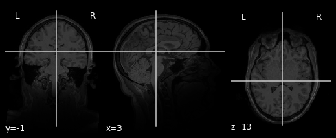

ShowLocation(data, -5, 5, 5)

Neuroimaging data is often stored in the format of nifti files .nii which can also be compressed using gzip .nii.gz. These files store both 3D and 4D data and also contain structured metadata in the image header.
There is an very nice tool to access nifti data stored on your file system in python called nibabel. If you don't already have nibabel installed on your computer it is easy via pip. First, tell the jupyter cell that you would like to access the unix system outside of the notebook and then install nibabel using pip. You only need to run this once (unless you would like to update the version).
!pip install nibabel
nibabel objects can be initialized by simply pointing to a nifti file even if it is compressed through gzip. First, we will import the nibabel module as nib (short and sweet so that we don't have to type so much when using the tool).
import os
import numpy as np
import scipy as scipy
from scipy import signal
%matplotlib inline
import matplotlib.pyplot as plt
import nibabel as nib
data = nib.load('./brain.nii.gz')
data.get_fdata().shape
If we want to get more help on how to work with the nibabel data object we can either consult the documentation or add a ?.
data?
The imaging data is stored in either a 3D or 4D numpy array. Just like numpy, it is easy to get the dimensions of the data using shape
data.shape
plt.imshow(data.get_fdata()[:,50,:])
Let's try a different slice.
plt.imshow(data.get_fdata()[1:300,0:260,140])
#plt.imshow(data.get_fdata()[95,:,:])
Why is it it doesn't look like a brain at all? What do you think it is showing?
Try slicing different dimensions (x,y,z) yourself to get a feel for how the data is represented in this anatomical image.
As you probably already notice, many of slices do not show brain at all! There are several techniques to determine whether a voxel belongs to the brain part or not. Using those techniques, we can obtain a mask, which is simply a 3D-array of 0's and 1's, where 1 tells you that that location is brain and 0 tells you the otherwise.
One way to use the mask is to superimprose it on a brain image to add highlights only the brain part that we care about.
Let's load a pre-computed mask image.
mask = nib.load('./mask.nii.gz')
Using matplotlib's imshow, we can superimpose the mask as a semi-transparent layer to highlight the brain.
plt.figure(figsize=(8, 8))
plt.imshow(data.get_fdata()[10:190,50:,150], 'gray', interpolation='none')
plt.imshow(mask.get_fdata()[10:190,50:,120], 'jet', alpha=0.5, interpolation='none')
plt.show()
Try slicing different dimensions (x,y,z) yourself to get a feel for how the data is represented in this anatomical image.
The function below contains skeleton code that is hardcoded to show 10 slices of brain images across the x axis, 5 slices apart.
TODO: Implement the following functionalities
# TODO:
def ShowSlicesAcrossAxis(data, axis, numbOfSlices, steps):
if axis == 'x':
plt.figure(figsize=(20, 20))
for i in range(1, numbOfSlices+1):
plt.subplot(1,numbOfSlices,i)
plt.imshow(data.get_fdata()[i*steps,:,:], 'gray', interpolation='none')
plt.text(10, 240, 'x={}'.format(i*steps), fontsize=12, color='white')
plt.show()
if axis == 'y':
plt.figure(figsize=(20, 20))
for i in range(1, numbOfSlices+1):
plt.subplot(1,numbOfSlices,i)
plt.imshow(data.get_fdata()[:,i*steps,:], 'gray', interpolation='none')
plt.text(10, 180, 'y={}'.format(i*steps), fontsize=12, color='white')
plt.show()
if axis == 'z':
plt.figure(figsize=(20, 20))
for i in range(1, numbOfSlices+1):
plt.subplot(1,numbOfSlices,i)
plt.imshow(data.get_fdata()[:,:,i*steps], 'gray', interpolation='none')
plt.text(10, 180, 'z={}'.format(i*steps), fontsize=12, color='white')
plt.show()
ShowSlicesAcrossAxis(data, 'x', 5, 1)
# this should show 17 brain slices along the z-axis that are 15 slices apart
ShowSlicesAcrossAxis(data, 'z', 17, 15)
# this should show ten brain slices along the y-axis that are 10 slices apart
ShowSlicesAcrossAxis(data, 'y', 10, 10)
A typical way to visualize a location is:

Your task is to improve this code so that it can generate a visualization like above. The code below provides a partial implemention.
At very least, you will need to add the following functionalities:
def indexToDistFromCenter(index, lengthOfAxis):
if ((index < 0) or (index >= lengthOfAxis)): # check for boundaries
raise Exception('The requested value ({}) exceeded the boundary'.format(index))
else:
center = round(lengthOfAxis/2)
distFromCenter = index - center
return distFromCenter
def distFromCenterToIndex(distFromCenter, lengthOfAxis):
center = round(lengthOfAxis/2)
index = center + distFromCenter
if ((index < 0) or (index >= lengthOfAxis)): # check for boundaries
raise Exception('The requested value ({}) exceeded the boundary'.format(distFromCenter))
else:
return index
# x, y, and z are input relative to the center (i.e. not the values you'd use to index into the data)
def ShowLocation(data, x, y, z):
shape = data.get_fdata().shape
xLength = shape[0]
yLength = shape[1]
zLength = shape[2]
xIndex = distFromCenterToIndex(x,xLength)
yIndex = distFromCenterToIndex(y,yLength)
zIndex = distFromCenterToIndex(z,zLength)
plt.figure(figsize=(10,10))
plt.subplot(1,3,1, xlabel='Z', ylabel='Y')
plt.imshow(data.get_fdata()[xIndex,:,:], 'gray', interpolation='none')
plt.plot([zIndex,zIndex],[0,yLength],'w-', linestyle = "-", lw=2)
plt.plot([0,zLength],[yIndex,yIndex],'w-', linestyle = "-", lw=2)
plt.text(10, 245, 'x={}'.format(x), fontsize=12, color='white')
plt.subplot(1,3,2, xlabel='Z', ylabel='X')
plt.imshow(data.get_fdata()[:,yIndex,:], 'gray', interpolation='none')
plt.plot([zIndex,zIndex],[0,xLength],'w-', linestyle = "-", lw=2)
plt.plot([0,zLength],[xIndex,xIndex],'w-', linestyle = "-", lw=2)
plt.text(10, 175, 'y={}'.format(y), fontsize=12, color='white')
plt.subplot(1,3,3, xlabel='Y', ylabel='X')
plt.imshow(data.get_fdata()[:,:,zIndex], 'gray', interpolation='none')
plt.plot([yIndex,yIndex],[0,xLength],'w-', linestyle = "-", lw=2)
plt.plot([0,yLength],[xIndex,xIndex],'w-', linestyle = "-", lw=2)
plt.text(10, 175, 'z={}'.format(z), fontsize=12, color='white')
plt.show()
ShowLocation(data, -2, 45, 20)
ShowLocation(data, -5, 5, 5)
def indexToDistFromCenter(index, lengthOfAxis):
if ((index < 0) or (index >= lengthOfAxis)): # check for boundaries
raise Exception('The requested value ({}) exceeded the boundary'.format(index))
else:
center = round(lengthOfAxis/2)
distFromCenter = index - center
return distFromCenter
def distFromCenterToIndex(distFromCenter, lengthOfAxis):
center = round(lengthOfAxis/2)
index = center + distFromCenter
if ((index < 0) or (index >= lengthOfAxis)): # check for boundaries
raise Exception('The requested value ({}) exceeded the boundary'.format(distFromCenter))
else:
return index
def ShowLocationWithMask(data, x, y, z, mask):
shape = data.get_fdata().shape
xLength = shape[0]
yLength = shape[1]
zLength = shape[2]
xIndex = distFromCenterToIndex(x,xLength)
yIndex = distFromCenterToIndex(y,yLength)
zIndex = distFromCenterToIndex(z,zLength)
plt.figure(figsize=(10,10))
plt.subplot(1,3,1, xlabel='Z', ylabel='Y')
plt.imshow(data.get_fdata()[xIndex,:,:], 'gray', interpolation='none')
plt.imshow(mask.get_fdata()[xIndex,:,:], 'jet', alpha=0.5, interpolation='none')
plt.plot([zIndex,zIndex],[0,yLength],'w-', linestyle = "-", lw=2)
plt.plot([0,zLength],[yIndex,yIndex],'w-', linestyle = "-", lw=2)
plt.text(10, 245, 'x={}'.format(x), fontsize=12, color='white')
plt.subplot(1,3,2, xlabel='Z', ylabel='X')
plt.imshow(data.get_fdata()[:,yIndex,:], 'gray', interpolation='none')
plt.imshow(mask.get_fdata()[:,yIndex,:], 'jet', alpha=0.5, interpolation='none')
plt.plot([zIndex,zIndex],[0,xLength],'w-', linestyle = "-", lw=2)
plt.plot([0,zLength],[xIndex,xIndex],'w-', linestyle = "-", lw=2)
plt.text(10, 175, 'y={}'.format(y), fontsize=12, color='white')
plt.subplot(1,3,3, xlabel='Y', ylabel='X')
plt.imshow(data.get_fdata()[:,:,zIndex], 'gray', interpolation='none')
plt.imshow(mask.get_fdata()[:,:,zIndex], 'jet', alpha=0.5, interpolation='none')
plt.plot([yIndex,yIndex],[0,xLength],'w-', linestyle = "-", lw=2)
plt.plot([0,yLength],[xIndex,xIndex],'w-', linestyle = "-", lw=2)
plt.text(10, 175, 'z={}'.format(z), fontsize=12, color='white')
plt.show()
ShowLocationWithMask(data, 0, 0, 0, mask)

ShowLocationWithMask(data, -2, 45, 20, mask)
numVoxels = np.sum(mask.get_fdata())
print(numVoxels)
def plotBrainVoxels(mask):
mask_np = mask.get_fdata()
brain_counts = []
for i in range(0, data.shape[2]):
zslice = mask_np[:,:,i]
brain_counts.append(zslice.sum())
plt.plot(brain_counts)
plt.show()
plotBrainVoxels(mask)
def plotBrainVoxelsInAxis(mask, axis):
if axis == 'x':
mask_np = mask.get_fdata()
brain_counts = mask_np.sum((0,2))
plt.plot(brain_counts)
if axis == 'y':
mask_np = mask.get_fdata()
brain_counts = mask_np.sum((1,2))
plt.plot(brain_counts)
if axis == 'z':
mask_np = mask.get_fdata()
brain_counts = mask_np.sum((0,1))
plt.plot(brain_counts)
print("X:")
plotBrainVoxelsInAxis(mask, 'x')
print("Y:")
plotBrainVoxelsInAxis(mask, 'y')
print("Z:")
plotBrainVoxelsInAxis(mask, 'z')
def crop(mask, axis):
if axis == 'x':
mask_np = mask.get_fdata()
brain_counts = mask_np.sum((0,2))
brain_counts
startOfBrain = np.inf
endOfBrain = np.NINF
for i in range(0,brain_counts.shape[0]): # syntax error
if (brain_counts[i] != 0 and brain_counts[i-1] == 0):
startOfBrain = i
elif (brain_counts[i] != 0 and brain_counts[i+1] == 0):
endOfBrain = i
plt.imshow(data.get_fdata()[startOfBrain:endOfBrain,:,:], 'gray', interpolation='none')
crop(mask, 'x')
def resampledGradient(mask, interval):
mask_np = mask.get_fdata()
brain_counts_x = mask_np.sum((0,2))
brain_counts_y = mask_np.sum((1,2))
brain_counts_z = mask_np.sum((0,1))
x_resampled = signal.resample(brain_counts_x,interval)
y_resampled = signal.resample(brain_counts_y,interval)
z_resampled = signal.resample(brain_counts_z,interval)
x_gradient = np.gradient(x_resampled)#np.gradient(brain_counts_x,5)
y_gradient = np.gradient(y_resampled)#np.gradient(brain_counts_y,5)
z_gradient = np.gradient(z_resampled)#np.gradient(brain_counts_z,5)
plt.plot(x_gradient, label='x gradient')
plt.plot(y_gradient, label='y gradient')
plt.plot(z_gradient, label='z gradient')
plt.legend()
plt.plot()
resampledGradient(mask, 100)
def getMassOfLeftHemisphere(mask):
getMassOfLeftHemisphere(mask)